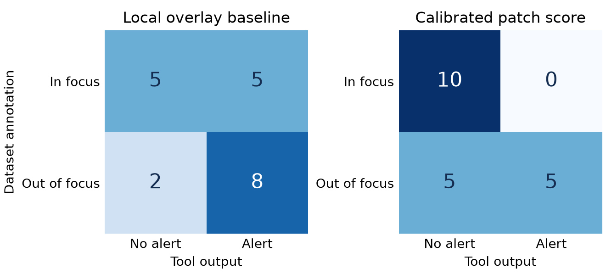

Slide Quality Review
Triage suspicious regions in a batch of microscopy images.
Choose a public example dataset or add your own tiles.
Review settings
Review queue
Select an image
Scanner validation

Patch-level benchmark results use held-out slides. See the repository for counts and limitations.
TCGA@Focus examples are annotated scanner patches. The IHC example contains an edited copy for checking localization. Methods and limitations.